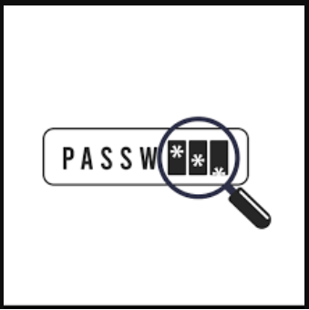

1: حمله SQL Injection یا تزریق کد SQL

حمله SQL Injection یکی از خطرناک ترین حملات به لایه پایگاه داده یا دیتا بیس هستش. در این حمله هکر به جای داده های معمولی دستورات SQL را در ورودی های فرم ها وارد میکنه. همچنین این حمله میتونه با پارامتر های URL و یا کوکی ها هم انجام بشه. این حمله وقتی موفقه که ورودی ها بدون اعتبار سنجی یا پاک سازی مستقیما تو کوئری های SQL استفاده و پردازش بشن. در این حمله، هدف هکر دسترسی غیر مجاز به داده های دیتا بیس، دور زدن احراز هویت، دزدیدن اطلاعات حساس، ایجاد تغییر تو اونها یا حذف اونها هستش. این حمله بسیار خطرناکه که میتونه در نهایت منجر به نفوذ کامل به دیتا بیس بشه و یا حداقل دزدیدن کمی اطلاعات.
نحوه جلوگیری از این حمله
برای جلوگیری از این حملات باید از PDO برای اتصال به دیتا بیس و از Prepare statement برای عملیات CRUD یا Create, Read, Update, Delete استفاده کنیم.
جلوگیری از این حمله با استفاده از زبان برنامه نویسی PHP

2: حمله XSS یا Cross-Site Scripting
این نوع حمله در سمت فرانت سایت یا client side رخ میده. تو این حمله هکر اسکریپت های مخربی که معمولا با جاوا اسکریپت نوشته میشن را در ورودی هایی مثل فرم ها، کامنت ها یا URL ها وارد میکنه. اگر این ورودی ها بدون اعتبار سنجی و فیلتر مستقیما تو خروجی HTML نمایش داده بشن، اسکریپت هکر در مرورگر قربانی اجرا میشه. هدف این حمله تغییر ظاهر صفحه، یا اجرای عمیات ناخواسته در مرورگر، سرقت کوکی ها، دزدیدن نشست ها یا Session Hijacking هستند. این نوع حمله، حمله خطرناک محسوب میشه مخصوصا اگر هدف هکر اپلیکیشن هایی باشه که اطلاعات حساس و یا کاربران زیادی دارن.
چجوری میتونیم از حمله XSS جلوگیری کنیم؟
با استفاده از تابع htmlspecialchars میتونیم از این حمله جلوگیری کنیم. این تابع از اجرای اسکریپت های تزریق شده جلوگیری میکنه. یک راه دیگه محدود کردن منابع قابل اجرا در مروگر هستش که با فعال کردن گزینه Content Security Policy میتونیم از این گزینه بهره مند بشیم.
حالا چجوری میتونم از حمله XSS در زبان PHP جلوگیری کنم؟

3: حمله CSRF یا Cross-Site Request Forgery
حمله CSRF یا "تقلب درخواست بین سایتی" نوعی حمله است که هکر بدون اجازه و اطلاع داشتن کاربر، عملی را در وبسایت انجام میده. این حمله معمولا زمانی اتفاق میوفته که کاربر دارای یک سشن و کوکی معتبر باشه و وارد یک لینک مخرب بشه. از اونجایی که بعد از اعتبار سنجی کاربر، وب سایت برای کاربر یک کوکی و سشن معتبر ایجاد میکنه، این حمله توسط این کوکی و سشن ها انجام میشه.
برای مثال ما تو سایت بانک هستیم و احراز هویت ما تایید شده، مرورگر برای ما یک سشن و یک کوکی برای شناسایی ما استفاده میکنه. در همین هنگام وقتی کاربر ندونسته وارد یه سایت مخرب بشه، سایت حاوی کدی هستش که به طور خودکار درخواست هایی به وبسایتی که کاربر ازش اومده، میفرسته. حالا چون کاربر در سایت یه کوکی داره پس درخواست هایی که از وبسایت مخرب فرستاده میشه، معتبر شناسایی میشن و کد ها توسط وب سایت پردازش میشه. تو همین ترتیب هکر میتونه با این درخواست ها و کد ها از اکانت شما که تو وبسایت بانک هستش برای خودش پول واریز کنه.
حالا چجوری میتونیم از این حملات در وبسایتمون جلوگیری کنیم؟
استفاده از توکن CSRF: این توکن در فرم ها قرار داده میشه و با هر درخواست ارسال میشه، هر موقع که فرمی ایجاد میشه و درخواست اون فرستاده میشه، وبسایت توکن جدید رو با توکن قبلی چک میکنه و اگر یکی نباشه، درخواست رد میشه.
همچنین میتونیم تو وبسایت برای عملیات های حساس از کاربر دوباره درخواست پسورد کنیم تا مطمئن بشیم که کاربر واقعا خودشه.
چجوری امنیت وبسایتمون رو در برابر حمله CSRF با زبان PHP افزایش بدیم؟


4: حمله DDoS یا Distributed Denial of Service
حمله دی داس حمله ای به لایه شبکه و منابع سرور است که در آن مهاجم با استفاده از چندین منبع مثل بات نت ها حجم عظیمی از درخواست ها رو به سمت سرور قربانی ارسال میکنه. این حجم بالا باعث مصرف منابع سرور میشن و ممکنه سرویس برای کاربران واقعی قطع بشه. هدف هکر ها توی این حمله از کار انداختن سرویس ها و ایجاد اختلال در دسترسی و یا فشار روانی یا مالی به مدیران سایت ها هستش. این حمله، حمله خطرناکی هستش به خصوص برای سایت های تجاری و یا دولتی
چجوری میتونم از این حمله تو وبسایت جلوگیری کنیم؟
برای اینکه بتونیم از این حمله جلوگیری کنیم یا بهتر بگم احتمال اینکه وبسایتمون حمله دی داس بخوره رو احتمالش رو بیاریم پایین تر، میتونیم گزینه Rate Limiting و IP Blacklisting رو فعال کنیم. ترافیک رو به صورت لحظه ای مشاهده و چک کنیم و از سرویس های ضد دی داس AWS Shield استفاده کنیم. همچنین میتونیم از سرویس هایی مثل Cloudflare هم استفاده کنیم.
چجوری تو PHP اینکارو بکنیم؟

5: حمله Brute Force یا حمله جستجوی فراگیر
حمله بروت فورس یا جستجوی فراگیر یک حمله به لایه احراز هویت هستش. از اونجایی که در وبسایت ها برای تامین امنیت اکانت کاربر از رمز عبور استفاده میشه، هکر با این حمله سعی میکنه که لیستی از رمز های مختلف رو در اکانت فرد مورد نظر امتحان میکنه تا بتونه وارد بشه . هدف هم که خب معلومه، نغوذ به حساب کاربر، دسترسی به پنل مدیریت توسط ورود به اکانت ادمین. سطح تهدید این حمله متوسط هستش، در واقع سطح تهدید این هک رو نوع اکانت شما و اینکه در چه وبسایتی هستین معلوم میکنه.
چجوری میتونیم از این حمله جلوگیری کنیم؟
برای این نوع حمله، اگر به عنوان یه کاربر عادی نگاه کنیم باید رمز هایی با عدد، نشانات مختلف مثل خط زیر یا آندرلاین، و حرف کوچیک و بزرگ استفاده کنیم. اما اگر به عنوان برنامه نویس وبسایت برای جلوگیری از این حمله به وبسایتمون نگاه کنیم، اول باید از password hash استفاده کنیم و بعد برای احزار هویت بیایم محدودیت بزاریم برای وارد شدن.
پ.ن: پسورد هش چون جوری برنامه نویسی شده که یک رمز گذاری کند هستش، مدت زمان امتحان کردن رمز های مختلف رو یکم به تعویق میندازه.
چجوری میتونم این کارارو تو زبان PHP انجام بدیم؟

6: حمله malware injection یا تزریق بد افزار
در این حمله هکر با بد افزاری که ساخته، از طریق فیلد های آپلود فایل این فایل مخرب رو میفرسته. عملکرد این حمله به این شکله که فرد فایل مخربی که از نوع php. و exe. هستش رو در فیلد های ارسال فایل میفرسته و میتونه کنترل سرور رو به دست بگیره و اطلاعات کاربران رو بدزده.
چجوری میتونم از این حمله تو وبسایتمون جلوگیری کنیم؟
اول اینکه برای شناسایی این فایل ها میتونیم فایل های آپلودی رو اسکن کنیم و از هشدار های آنتی ویروس یا Google Safe Browsing استفاده کنیم؛ و دوم اینکه میتونیم از روش هایی مثل محدود کردن نوع پسوند فایل های اجرایی و اسکن فایل ها با آنتی ویروس قبل از اجرا میتونیم با این حمله مقابله کنیم.
چجوری میتونم با php از این حمله جلوگیری کنیم؟